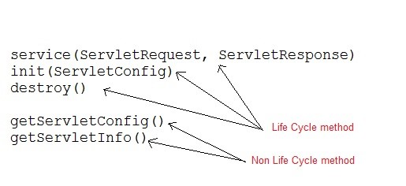

Servlet
What are Servlets?
Java Servlets are programs that run on a Web or Application server and act as a middle layer between a request coming from a Web browser or other HTTP client and databases or applications on the HTTP server. Using Servlets, you can collect input from users through web page forms, present records from a database or another source, and create web pages dynamically.- The servlet is initialized by calling the init () method.
- The servlet calls service() method to process a client's request.
- The servlet is terminated by calling the destroy() method.
- Finally, servlet is garbage collected by the garbage collector of the JVM.
-
The init() method
The init method is designed to be called only once. It is called when the servlet is first created, and not called again for each user request. So, it is used for one-time initializations, just as with the init method of applets.
The servlet is normally created when a user first invokes a URL corresponding to the servlet, but you can also specify that the servlet be loaded when the server is first started.
When a user invokes a servlet, a single instance of each servlet gets created, with each user request resulting in a new thread that is handed off to doGet or doPost as appropriate. The init() method simply creates or loads some data that will be used throughout the life of the servlet.
The init method definition looks like this:
public void init() throws ServletException { // Initialization code... } -
The service() method
The service() method is the main method to perform the actual task. The servlet container (i.e. web server) calls the service() method to handle requests coming from the client( browsers) and to write the formatted response back to the client.
Each time the server receives a request for a servlet, the server spawns a new thread and calls service. The service() method checks the HTTP request type (GET, POST, PUT, DELETE, etc.) and calls doGet, doPost, doPut, doDelete, etc. methods as appropriate.
Here is the signature of this method:
public void service(ServletRequest request, ServletResponse response) throws ServletException, IOException{ }The service () method is called by the container and service method invokes doGet, doPost, doPut, doDelete, etc. methods as appropriate. So you have nothing to do with service() method but you override either doGet() or doPost() depending on what type of request you receive from the client.
The doGet() and doPost() are most frequently used methods with in each service request. Here is the signature of these two methods. -
The doGet() Method
A GET request results from a normal request for a URL or from an HTML form that has no METHOD specified and it should be handled by doGet() method.
public void doGet(HttpServletRequest request, HttpServletResponse response) throws ServletException, IOException { // Servlet code } -
The doPost() Method
A POST request results from an HTML form that specifically lists POST as the METHOD and it should be handled by doPost() method.
public void doPost(HttpServletRequest request, HttpServletResponse response) throws ServletException, IOException { // Servlet code } -
The destroy() method
The destroy() method is called only once at the end of the life cycle of a servlet. This method gives your servlet a chance to close database connections, halt background threads, write cookie lists or hit counts to disk, and perform other such cleanup activities.
After the destroy() method is called, the servlet object is marked for garbage collection. The destroy method definition looks like this:public void destroy() { // Finalization code... }
Architecture Diagram
The following figure depicts a typical servlet life-cycle scenario.- First the HTTP requests coming to the server are delegated to the servlet container.
- The servlet container loads the servlet before invoking the service() method.
- Then the servlet container handles multiple requests by spawning multiple threads, each thread executing the service() method of a single instance of the servlet.
There are basically two main types of website - static and dynamic.
A static site is one that is usually written in plain HTML and what is in the code of the page is what is displayed to the user.
A dynamic site is one that is written using a server-side scripting language such as PHP, ASP, JSP, or Coldfusion. In such a site the content is called in by the scripting language from other files or from a database depending on actions taken by the user.
Relative merits of static and dynamic websites
Static sites - advantages
Flexibility is the main advantage of a static site - every page can be different if desired, to match the layout to different content, and the designer is free to put in any special effects that a client may ask for in a unique way on different pages. This allows theming - for instance an author may want a different theme for a different book and associated pages or perhaps for a series of books, in order to match the cover designs or the context of the stories.
Cost is generally lower up-front than a dynamic site.Static sites - disadvantages
The main problem with any static site appears when you wish to update the content. Unless you are conversant with HTML and the design methods used in the site then you have to go back to the designer to have any content changes made. This may be perfectly ok when a new page is required which needs design input, but if all you want to do is change some text then it can be a nuisance for both client and designer.
The second main problem is scalability. If you wish to sell products on your site and you have a lot of them then you may have to construct individual pages for each one, which can take considerable time, effort and cost.
Costs - there are ongoing costs for updating the content.Dynamic sites - advantages
The main advantages of dynamic sites are that by connecting them to databases you can easily pull in information in an organised and structured way to create product pages or categories of related products sorted in a variety of different ways depending on how the user wants to view them.
This ability to connect to a database means that you can also create a content management system - an interface which allows the client to input and manage data via a web-based series of administration pages. That content can be text for their pages and images to go along with the text, or items in their product range with categories, specifications, short and long descriptions, images, etc. In both these cases it can be as simple or as complex as the client requires.
There are little or no ongoing costs unless there is a change in the basic design or an extra capability added.
Dynamic sites - disadvantagesThe design of a dynamic site is more fixed than a static one because many of the pages are essentially a template into which data and content is poured to create multiple pages of a similar type. So for instance all your product pages will be essentially the same page layout with different data being displayed. While some customisation cabability can be built in it is usually quite limited, such a selecting from a set of pre-defined options. Individual layout changes to particular pages are not usually possible.
Costs are higher initially than for a static site, and additional functionality may also cost more, particularly if it's something that wasn't envisaged originally and requires re-writing of the core code or database.
- javax.servlet.http
- javax.servlet
Some Important Classes and Interfaces of javax.servlet
| INTERFACES | CLASSES |
|---|---|
| Servlet | ServletInputStream |
| ServletContext | ServletOutputStream |
| ServletConfig | ServletRequestWrapper |
| ServletRequest | ServletResponseWrapper |
| ServletResponse | ServletRequestEvent |
| ServletContextListener | ServletContextEvent |
| RequestDispatcher | ServletRequestAttributeEvent |
| SingleThreadModel | ServletContextAttributeEvent |
| Filter | ServletException |
| FilterConfig | UnavailableException |
| FilterChain | GenericServlet |
| ServletRequestListene | - |
Some Important Classes and Interface of javax.servlet.http
| INTERFACES | CLASSES |
|---|---|
| HttpServletRequest | HttpServlet |
| HttpSessionAttributeListener | HttpServletResponse |
| HttpSessionListener | HttpSession |
| HttpSessionEvent | Cookie |
Servlet Interface
Servlet Interface provides five methods. Out of these five methods, three methods are Servlet life cycle methods and rest two are non life cycle methods.
GenericServlet Class
GenericServlet is an abstract class that provides implementation of most of the basic servlet methods. This is a very important class.
Methods of GenericServlet class- public void init(ServletConfig)
- public abstract void service(ServletRequest request,ServletResposne response)
- public void destroy()
- public ServletConfig getServletConfig()
- public String getServletInfo()
- public ServletContext getServletContext()
- public String getInitParameter(String name)
- public Enumeration getInitParameterNames()
- public String getServletName()
- public void log(String msg)
- public void log(String msg, Throwable t)
HttpServlet class
HttpServlet is also an abstract class. This class gives implementation of various service() methods of Servlet interface.
To create a servlet, we should create a class that extends HttpServlet abstract class. The Servlet class that we will create, must not override service() method. Our servlet class will override only the doGet() and/or doPost() methods.
The service() method of HttpServlet class listens to the Http methods (GET, POST etc) from request stream and invokes doGet() or doPost() methods based on Http Method type.
Usage of Filter
- recording all incoming requests
- logs the IP addresses of the computers from which the requests originate
- conversion
- data compression
- encryption and decryption
- input validation etc.
Advantage of Filter
- Filter is pluggable.
- One filter don't have dependency onto another resource.
- Less Maintenance
Why use Session Tracking?
To recognize the user It is used to recognize the particular user.Session Tracking Techniques
-
Cookies
- a small piece of information that is persisted between the multiple client requests.
How Cookie works By default, each request is considered as a new request. In cookies technique, we add cookie with response from the servlet. So cookie is stored in the cache of the browser. After that if request is sent by the user, cookie is added with request by default. Thus, we recognize the user as the old user.
There are 2 types of cookies in servlets.- Non-persistent cookie - It is valid for single session only. It is removed each time when user closes the browser.
- Persistent cookie - It is valid for multiple session . It is not removed each time when user closes the browser. It is removed only if user logout or signout.
Advantages of Cookies- Simplest technique of maintaining the state.
- Cookies are maintained at client side.
Disadvantage of Cookies- It will not work if cookie is disabled from the browser.
- Only textual information can be set in Cookie object.
-
Hidden Form Field
- a hidden (invisible) textfield is used for maintaining the state of an user. In such case, we store the information in the hidden field and get it from another servlet. This approach is better if we have to submit form in all the pages and we don't want to depend on the browser. Let's see the code to store value in hidden field.<input type="hidden" name="uname" value="Vimal Jaiswal">
Here, uname is the hidden field name and Vimal Jaiswal is the hidden field value.
Advantage of Hidden Form Field- It will always work whether cookie is disabled or not.
Disadvantage of Hidden Form Field- It is maintained at server side.
- Extra form submission is required on each pages.
- Only textual information can be used.
-
URL Rewriting
- is the process of altering (often automatically by means of a program written for that purpose) the parameters in a URL (Uniform Resource Locator). We append a token or identifier to the URL of the next Servlet or the next resource. We can send parameter name/value pairs using the following format:url?name1=value1&name2=value2&??
A name and a value is separated using an equal = sign, a parameter name/value pair is separated from another parameter using the ampersand(&). When the user clicks the hyperlink, the parameter name/value pairs will be passed to the server. From a Servlet, we can use getParameter() method to obtain a parameter value.
Advantage of URL Rewriting- It will always work whether cookie is disabled or not (browser independent).
- Extra form submission is not required on each pages.
Disadvantage of URL Rewriting- It will work only with links.
- It can send Only textual information.
-
HttpSession interface - can be used a container creates a session id
for each user and this id to identify the particular user. In such case,
container creates a session id for each user.The container uses this id to
identify the particular user.An object of HttpSession can be used to perform
two tasks:
- bind objects
- view and manipulate information about a session, such as the session identifier, creation time, and last accessed time.
How to get the HttpSession object?
The HttpServletRequest interface provides two methods to get the object of HttpSession:- public HttpSession getSession(): Returns the current session associated with this request, or if the request does not have a session, creates one.
- public HttpSession getSession(boolean create): Returns the current HttpSession associated with this request or, if there is no current session and create is true, returns a new session.
Commonly used methods of HttpSession interface
- public String getId(): Returns a string containing the unique identifier value.
- public long getCreationTime(): Returns the time when this session was created, measured in milliseconds since midnight January 1, 1970 GMT.
- public long getLastAccessedTime(): Returns the last time the client sent a request associated with this session, as the number of milliseconds since midnight January 1, 1970 GMT.
- public void invalidate(): Invalidates this session then unbinds any objects bound to it.
Advantage of Filter
- Filter is pluggable.
- One filter don't have dependency onto another resource.
- Less Maintenance
Reference:
https://www.tutorialspoint.com/servlets/servlets-life-cycle.htm
http://www.studytonight.com/servlet/how-a-servlet-application-work
https://www.javatpoint.com